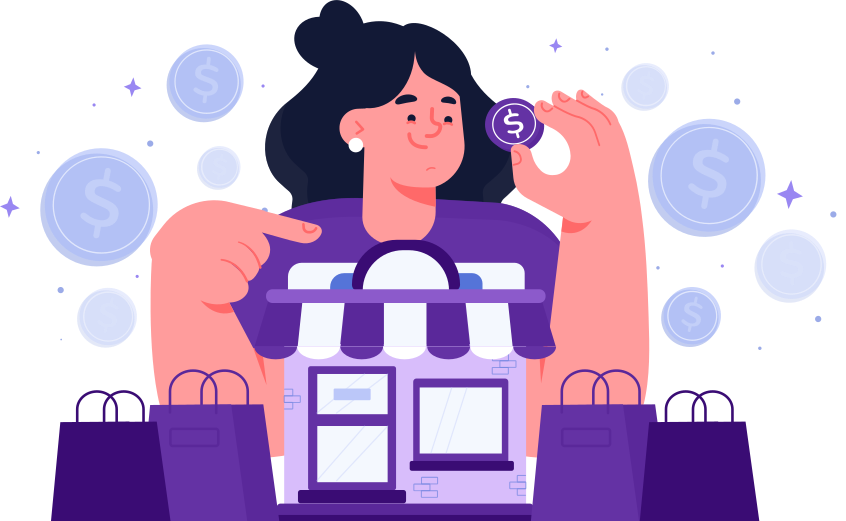

Acredite no seu potencial empreendedor e descubra o passo a passo de criar seu modelo de negócio de sucesso, mesmo em tempos de pandemia.
Empreender é saber identificar uma oportunidade de atuação e lucro. Junto a essa visão estratégica de negócios, estão capacidades que podem e devem ser desenvolvidas pela futura empreendedora: criatividade, planejamento e disciplina.
Mulheres como você têm muito a ensinar quando o assunto é capacidade de liderança, organização e sucesso nos empreendimentos.
O nosso artigo mais recente, em que listamos as 5 mulheres empreendedoras para inspirar você a ser a protagonista do seu próprio negócio, é um ótimo exemplo que, mesmo em realidades e obstáculos diversos, o empreendedorismo feminino é poderoso o suficiente para transformar a realidade vigente.
Um protagonismo feminino essencial para você, mulher, também aprender a gerir sua carreira profissional e aprender a ser uma empreendedora corporativa, atuando dentro de outras empresas, ou mesmo encarar o desafio de ser dona do seu próprio negócio.
Sim, o mundo dos negócios é cada vez mais ocupado pela presença feminina. Ainda que a desigualdade seja algo marcante, as mulheres conquistam cada vez mais espaço na economia como empreendedoras.
Dados da última Pesquisa Nacional por Amostra de Domicílios Contínua (PNADC), realizada pelo IBGE, mostram que cerca de 9,3 milhões de mulheres estão à frente de negócios no Brasil e que em 2018 elas já eram 34% dos “donos de negócio”.
São informações promissoras, que indicam que o cenário tem se construído favorável, mas ainda há muitas barreiras a serem vencidas, como a discriminação por gênero e raça.
Em entrevista ao site Brasil de Fato, Rafaella Florêncio, professora do Instituto Federal do Ceará (IFCE) e ativista do Movimento Negro, afirma que, no que diz respeito às condições estruturais, de vida e de saneamento, as mulheres negras são na grande maioria das vezes mais prejudicadas. "40% das mulheres negras não têm acesso a esgoto. Esses são fatores que vão influenciar no número de óbitos causados pelo coronavírus".
Sabemos que o cenário para mulheres negras se desenvolverem como empreendedoras é ainda mais complicado, sobretudo pelo momento atual.
Por isso, nosso esforço é tentar oferecer o melhor conteúdo possível e de forma gratuita, como nossa live que realizaremos nesta quinta. Tudo, para que o acesso ao conhecimento sobre negócios não seja mais uma barreira.
O medo de mulheres empreenderem é por conta, principalmente, pela pressão social maior que sofrem por serem mulheres, seja no ambiente corporativo ou quando perdem o emprego e se veem obrigadas a trabalharem de maneira mais informal.
Na vida real, mulheres acabam por atuar em suas atividades profissionais com a mesma gana e energia de como se estivessem empreendendo, seja para botar comida na mesa, para o aluguel, e dar um futuro melhor para seus.
Em meio a esse turbilhão de desafios, podem surgir as tais oportunidades e necessidades, tão valorizadas em cursos sobre empreendedorismo.
A resiliência feminina, apesar de surgir dessas pressões sociais por serem mulheres, acaba por torná-las mais propensas a criarem condições de superar os desafios.
Fique sempre atenta em sua rotina, mesmo em situações corriqueiras, para treinar sua visão empreendedora e identificar no comportamento das pessoas, ou nos anseios que verbalizam alguma ideia ou hipótese.
Uma ótima forma de aprimorar seu olhar de empreendedora, é ler artigos ou post de sites que falam sobre empreendedorismo, que apresentam a histórias de outras empreendedoras e como elas fizeram para transformar uma simples ideia em um produto ou serviço de valor.
Revistas, sites e jornais são ótimos filtros que ajudam a interpretar a sociedade, os hábitos, os problemas recorrentes, as tendências de mercado. Quanto melhor você cuida da qualidade de informação que você consome, melhor você desenvolve seu cérebro empreendedor.
Elaborar um plano de negócio significa você colocar no papel antes, tudo aqui que você pensa em executar. Essa pode ser uma etapa que assusta, mas entenda que se trata de uma valiosa ferramenta que todos os empreendedores usam, para diminuir ao máximo os riscos a serem assumidos.
A ferramenta mais conhecida e utilizada para traçar seus planos é o Business Canvas, ou Quadro de modelo de negócio. Um retângulo com 9 divisões que representa cada uma um aspecto importante do seu negócio:
Em linhas gerais, esses pontos se relacionam um com o outro e são preenchidos a fim de fornecer respostas sobre se seu modelo de negócio é viável, lucrativo, saudável e se entrega valor para seus clientes.
Sites como o do SEBRAE, Endeavor e Rede Mulher Empreendedora , além de ótima fonte de referência, você encontra ajuda especializada para te apoiar nessa jornada.
E como exercício de perder o medo, conte suas ideias para pessoas confiáveis, que você sabe que suas opiniões são importantes. O fator humano e do afeto dos seus amigos, além de fornecer críticas construtivas, surtem com efeito animador para te motivar a seguir em frente.
Fique atenta as programações de eventos de negócios em sua região e participe. Nesses tempos de pandemia, grande parte dos eventos são transmitidos on line ao vivo e até ficam gravadas e disponíveis para assistir a qualquer momento.
Tenha consciência que nem todas as suas tarefas cabem num só dia. Portanto, busque sempre otimizar seu tempo. Uma maneira de saber o que é mais importante ou não, é calcular quanto custa sua hora de trabalho e, dessa forma, você irá saber o que está tomando seu tempo e dinheiro.
Na sua jornada empreendedora, você vai errar algumas vezes até acertar. Faz parte. Um mantra para empreendedores é que se deve errar o mais cedo possível.
Lembre-se, que a resiliência e sua aliada no processo de amadurecimento e aprendizagem. Cada pessoa tem seu jeito de fazer as coisas, mas busque não se limitar. Reveja suas atitudes, ações e pensamentos e, se necessário, escolha a mudança.